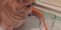
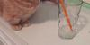
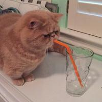
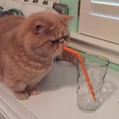

Estático / Demo: Image versions
Module Preview
-
Original image (400x400)

-
Scaled down to 100x50 with default (image center) focus point
 -
Scaled down to 100x50 with (400,400) focus point
 -
Scaled up to 600x300 with default (image center) focus point
-
Scaled up to 600x300 with (0,400) focus point
-
Resized proportionally by only specifying width (300)

-
Resized proportionally by only specifying height (200)
 -
Resized proportionally by only specifying width (150) as a number (shorthand)

Code
<div class="mod_imageversions" data-init="test">
<ul>
<li>
<h3>Original image (400x400)</h3>
<img src="media/george.jpg" alt="Original George" />
</li>
<li>
<h3>Scaled down to 100x50 with default (image center) focus point</h3>
<img src="media/george_100x50.jpg" alt="Small centered George" />
</li>
<li>
<h3>Scaled down to 100x50 with (400,400) focus point</h3>
<img src="media/george_100x50_400,400.jpg" alt="Scaled down George's paws" />
</li>
<li>
<h3>Scaled up to 600x300 with default (image center) focus point</h3>
<img src="media/george_600x300.jpg" alt="Large centered George" />
</li>
<li>
<h3>Scaled up to 600x300 with (0,400) focus point</h3>
<img src="media/george_600x300_0,400.jpg" alt="Enlarged George's paws" /></li>
<li>
<h3>Resized proportionally by only specifying width (300)</h3>
<img src="media/george_300x300.jpg" alt="George resized by specifying width only" /></li>
<li>
<h3>Resized proportionally by only specifying height (200)</h3>
<img src="media/george_200x200.jpg" alt="George resized by specifying height only" /></li>
<li>
<h3>Resized proportionally by only specifying width (150) as a number (shorthand)</h3>
<img src="media/george_150x150.jpg" alt="George resized by specifying width only (shorthand)" /></li>
</ul>
</div>
Documentation
Description
Example setup for media:imageversions gulp task
To have versions of an image created automatically, a config file "imageversions.js" is required in the same folder as original image.
Config may look like this:
module.exports = {
'george.jpg': [
'100x50',
{
size: '100x50',
focusPoint: '400,400'
},
{
size: '600x300'
},
{
size: '600x300',
focusPoint: '0,400'
},
{
width: 300
},
{
height: 200
},
150
]
};
Where 'george.jpg' is a filename of original image to generate crops from.
Each crop can be defined in one of the following formats:
- a size string, like '100x50'
'100x50' - an object, containing size and optionally focusPoint properties (focus point has to be specified as coordinates on original, not resized image)
{ size: '100x50', focusPoint: '400,400' } - an object, containing just width or just height property
{ width: 300 } or { height: 200 } - a number (which would be interpreted as a desired width)
150
Special thanks to george2legs for a test image.